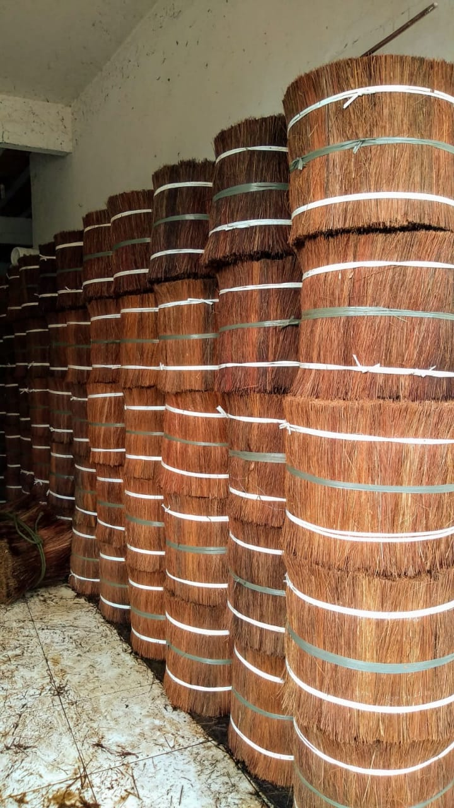

Piaçava Cortada e Penteada
Fibra de piaçava premium ideal para a produção de vassouras artesanais de alta qualidade para limpeza doméstica e comercial. Material natural, resistente e sustentável da Bahia.
Há mais de 30 anos produzindo vassouras, escovas e cordas de alta qualidade com fibras naturais de piaçava. Tradição familiar e sustentabilidade em cada produto artesanal brasileiro. Entrega para todo o Brasil com qualidade garantida.
Anos de Experiência
Natural
Clientes satisfeitos
A Bahia Piaçava é uma empresa familiar especializada na produção artesanal de vassouras de piaçava há mais de três décadas. Nossa expertise em fibras naturais da palmeira Attalea funifera combina tradição brasileira com práticas sustentáveis, oferecendo vassouras ecológicas, escovas naturais e cordas biodegradáveis de alta qualidade para todo o Brasil.
A piaçava natural é uma fibra extraída da palmeira Attalea funifera, nativa da Mata Atlântica baiana. Nossos produtos artesanais sustentáveis são 100% naturais, biodegradáveis e duráveis, respeitando o meio ambiente e valorizando a tradição sustentável brasileira na produção de vassouras, escovas e cordas ecológicas.
Fibras extraídas sustentavelmente
Produtos duráveis e resistentes
Conhecimento passado por gerações
Descubra nossa ampla linha de produtos artesanais feitos com fibras de piaçava 100% naturais da Bahia. Qualidade, sustentabilidade e tradição em cada vassoura, escova e corda ecológica.
Fibra de piaçava premium ideal para a produção de vassouras artesanais de alta qualidade para limpeza doméstica e comercial. Material natural, resistente e sustentável da Bahia.
Coco de piaçava natural: parte rígida e resistente da palmeira Attalea funifera, ideal para artesanato sustentável, jardinagem ecológica e decoração rústica. Material 100% biodegradável da Bahia.

Fibra de piaçava amplamente utilizada para coberturas naturais de quiosques, telhados e áreas externas. Possui resistência à exposição de sol e chuva, além de fornecer isolamento térmico eficiente.
Fornecemos piaçavas resistentes e versáteis que se encaixam às suas necessidades. Nossos produtos sustentáveis combinam resistência natural com a tradição artesanal brasileira de mais de 30 anos.
Produtos naturais que resistem ao tempo e ao uso intenso, oferecendo excelente custo-benefício e sustentabilidade comprovada.
Fibras naturais e biodegradáveis que respeitam o meio ambiente em todo o ciclo de vida do produto.
Produtos livres de químicos nocivos e microplásticos, seguros para uso doméstico e pessoal.
de qualidade e satisfação
Estamos prontos para atender suas necessidades de produtos naturais de piaçava. Solicite um orçamento personalizado gratuito ou tire suas dúvidas conosco. Entregamos para todo o Brasil.
Rodovia Pontal Buerarema, 1040
Bairro Nossa Senhora da Vitória, Ilhéus-BA
CEP: 45655-470
Segunda a Sexta: 7h às 17h
Sábado: 7h às 12h
Domingo: Fechado